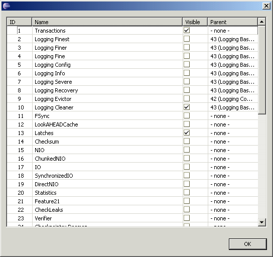
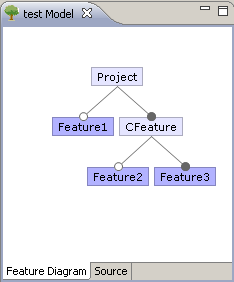
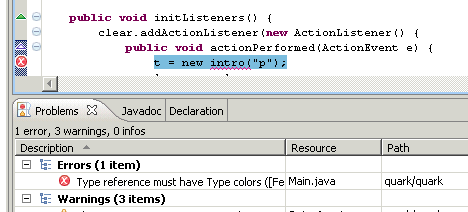
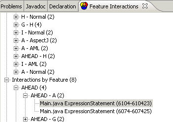

CIDE (originally for Colored Integrated Development Environment, pronounced sīd like "side") is a software product line tool for software product line development (esp. analyzing and decomposing legacy code). It follows the paradigm of virtual separation of concerns, i.e., developers do not physically extract the feature code, but just annotate code fragments inside the original code and use tool support for views and navigation. For annotation, background colors are used, so that code fragments belonging to a feature are shown with a background color; hence the name.
CIDE is closely related to conditional compilation with preprocessors, for example using #ifdef and #endif statements. However, in contrast to traditional preprocessors, which typically work on plain text or tokens, CIDE provides a number of innovations. CIDE annotates code based on the underlying structure and can hence guarantee syntactic correctness of all generated products. On top, a product-line-aware type system even guarantees that all variants are type safe, i.e., they can be compiled. To cope with scattered code, CIDE provides views on the source code. To reduce code obfuscation, CIDE experiments with using visual representations, such as background colors to represent annotations.
CIDE is a research project. The prototype including its source code is available for download on this site. It is used in various branches of software engineering research for feature-oriented development, e.g., granularity of feature extensions, safe composition and type checking, feature scoping, extractive SPL adoption model, language-independent feature-decomposition, feature interaction analysis, feature location/feature mining, feature modularity, feature visualizations, and many more.

see http://wwwiti.cs.uni-magdeburg.de/~ckaestne/ or http://researchr.org/tag/cide
A comprehensive overview of the concepts behind CIDE can be found in the dissertation Virtual Separation of Concerns.
CIDE is an Eclipse Plug-in. To install you need Eclipse 3.5 (Galileo) running with Java 1.6. (Other versions may work but have not been tested). We recommend to install CIDE in a separate Eclipse version that you do not use productively.
Use the Update Site http://wwwiti.cs.uni-magdeburg.de/iti_db/research/cide/update/ to install CIDE (see site for instructions).
If you want to use a graphical feature model (recommended), you need to install first the Feature Modeling plugin of FeatureIDE from the following Update Site: http://wwwiti.cs.uni-magdeburg.de/iti_db/research/featureide/deploy/
On installation you may select from the following options
(As of June 2009, the pure-Java version of CIDE has been discontinued, since all features have been migrated to the new version. In case you want to use the old CIDE version (Java only, works in Eclipse 3.3) you can also use this plugin: coloride_1.2.0.jar April 10th, 2008)
Source code
CIDE is open source (GPL license). The source code is available via anonymous access to this SVN repository: https://faracvs.cs.uni-magdeburg.de/svn/ckaestne-coloredIDE
Some minimal developer documentation is available in the according trac system: https://faracvs.cs.uni-magdeburg.de/projects/ckaestne-coloredIDE
Switch to the CIDE perspective.

Enable CIDE for an existing project using the project's context menu:

Note: Always use the Project Explorer, not the Package Explorer in Eclipse. Several features will not work in the Package Explorer.
Before you can annotate a file, you need to define features in a feature model.
CIDE currently supports three different kinds of feature models (and is open for extension). The simplest feature model is a list of features, which are all optional and unrelated. It is not possible to specify dependencies between features (except a parent relationship, which is roughly equivalent to an implies relationship). You can edit features from the project's context menu "Edit Features (List)..."
Typically, you rather want to use a real feature model with the GUIDSL Plugin (also all examples use this kind of feature models). This provides a graphical feature model editor from FeatureIDE, which additionally supports arbitrary relationships between features (propositional formulas). The feature model is stored in two files in the project's root (model.m and model.colors). To edit the feature model, double click on model.m or use the project's context menu "Edit Features (guidsl)". It is also possible to import feature models from some other formats.
Finally, there is a connector to pure::variants, so that you can use pure::variants feature models. These feature models are stored in a separate Eclipse project. (Type checking is currently not implemented with pure::variants feature models).
Currently only a single feature model type can be used at a time for all projects. You can configure which to use in Eclipse's preferences dialog.
Finally, the view Feature List provides a list of all defined features, independent of the underlying feature model. This view can also be used to assign colors or select and deselect features for views (see below).
 
Now you can open every file with a special Colored Editor. In this editor you can select a piece of code and assign a feature from the context menu. You should see a colored background on this code segment shortly after. If the "Colored Java Editor" (Advanced Java Support) or "Colored Source Editor" (for all other languages) is not show in the "Open With" selection, select it using the "Other..." dialog. Tip: In Eclipse preferences (General - Editors - File Association) you can assign certain file types to always open with the Colored Editor.

Annotations in CIDE follow the underlying structure of a document. Additionally, only optional code fragments can be annotated. We call this disciplined annotations. For example, you can select an entire method and annotate it (or an entire statement, an entire class, and so on), but you cannot select arbitrary code fragments like isolated brackets. CIDE will not provide the possibility to assign features to undisciplined annotations.
Annotated code may be edited with the Colored Editor, but not outside as annotations might get lost. When editing the code, it needs to be saved before colors are updated and features can be assigned. The marker at the bottom of the editor may give some indication whether CIDE could process the source code.
Typically, it is quite intuitive what code fragments are disciplined and can be annotated. If you are interested in the underlying mechanism, you can open the ASTView (Menu: Window - Open View - ASTView) to see the underlying structure. You can even assign features to code fragments in this view. For normal development, the ASTView is not necessary.

To create a variant/product for a certain feature configuration select "Generate Variant" from the project's context menu. You have to select the features to include in this configuration and a target project (double-click features to select or deselect them). CIDE will now copy the source code to the target project and remove all colored code that is not included in the variant.
Thanks to disciplined annotations, variant generation will always yield syntactically correct code.

Pro-Tip: The creation of variants can also be automated using an ANT task from within Eclipse. Use the task cide.confGen as shown below, with featureSelection containing a comma-separated list of features that the variant should contain (no whitespace!). Make sure you run the ANT script from within Eclipse with the same JRE as Eclipse.
<cide.confGen inputProject="coloredProject" outputProject="output" featureSelection="FeatureA,FeatureB,FeatureC" />
As
with preprocessors, feature code is scattered and tangled in
implementations with CIDE. In contrast to feature modules or aspects,
there is no notion of modularity. With views, CIDE emulates modularity
to some degree. Views show an excerpt of the code for a feature
selection and can be enabled or disabled in several views and editors
with the following button:
There are two kinds of views: a view on a feature and a view on a variant. You can switch between them in the Feature List view. A view on a variant shows all code of a feature (or multiple features), but hides everything else. A view on a variant shows all code that will be generated for a feature selection and hides all other code. The subtle but important different between both views is explained in more details in the ViSPLE'08 paper and in the dissertation Virtual Separation of Concerns.
All views are based on the feature selection in the Feature List view.
You can enable a view in the Project Explorer to show only files that contain code of the selected features, as in this example for Berkeley DB:

Note: In the default installation views will not work on Java files in the Project Explorer, because the Java Renderer uses an own model that is not file-based. If you want to use views on Java files use the following setting: Project-Explorer Menu->Customize View->Content->Deselect "Java Elements".
Also inside files (in the Colored Text Editor, currently not in the Colored Java Editor) you can hide all code except code of the selected feature (click to enlarge).

CIDE provides a product-line-aware type system that can detect type errors in the entire software product line (i.e., in all potentially millions of variants). Currently, this type system is implemented only for few languages including Java and Bali and works only with the list and guidsl feature models.
Typing errors that may occur in some variants are reported like standard Java errors in Eclipse (for example, CIDE checks that a method invocation can find the target method declaration in all variants; thus it is illegal to color only the method declaration but not the invocation in an SPL in CIDE) . The type-checker runs automatically in the background, however in case of problems it can be forced to recheck the entire project using the "Force Type-Checking" operation from the project's context menu. It may also be necessary to call that operation once after starting Eclipse to initialize the type system. The errors found with these type-checks are signaled like Java errors in the "Problems" view and underlined directly in the source code. Often also "Quick fixes" are provided (context menu).
CIDE provides a series of export and import mechanisms accessible via Eclipse's export and import dialogs in a project's context menu. For example, annotated code can be exported into a representation that can be processed by the C preprocessor or can be exported into AHEAD feature modules. Imports are available for example from AHEAD and Antenna.
All exports and imports are highly experimental. They differ in maturity. Most work only for Java and only for a subset of annotations. Be prepared to invest some time and to check CIDE's source code if you want to use exports and imports.
Finally, CIDE can collect several statistics about the source code, annotations and interactions between annotations. This dialog can also be used to navigate to all code fragments of a feature. Statistics are shown in a separate view opened from the project's context menu.
The derivative notation used is the following: A* contains the changes of A to the base code. B*A* contains the changes of B to the changes made by A to the base code. Therefore B*A* and A*B* are not equal. In cases where the order is not fixed, e.g., if a node is directly colored with two colors, this is shown with parenthesis in the derivative's name. For example, (A*B)* could be stored in either A*B* or B*A*, and D*(C*B*A)*X* could be stored in D*C*B*A*X* or D*A*B*C*X* or similar..
CIDE supports a number of different languages. Java is special, because there is a JDT version which uses the Eclipse infrastructure (recommended). All other languages (including another Java plugin) are generated from the language's grammar. Language plugins are available from the update site. The grammar and all source code for each language extension can be found in CIDE's repository. All grammars are in the gCIDE format. You can select which plugins to use in Eclipse's preference dialog.
Currently the following formats are supported:
| Language Extension | File extension | Comments |
|---|---|---|
| Featherweight Java | .fj | |
| Java | .java | |
| Java (JDT) | .java | recommended, supports type checking |
| C | .c, .h | exact parser, does not understand preprocessor statements |
| C (approx) | .c, .h | pseudo-parser, does not recognize full structure and not all preprocessor statements; use only one C extension at a time |
| C# | .cs | |
| ECMAScript (JavaScript) | .js | |
| Haskell | .hs | pseudo-parser, skips over expressions |
| Bali | .b | supports type checking |
| ANTLR | .g | simple productions only, no options or semantic extensions. |
| JavaCC | .cc | |
| gCIDE | .gcide | bootstrapped grammar for gCIDE itself |
| Properties | .properties | for line-based property files |
| HTML and XML | .html; .xml | XML parser does not parse doctype declarations yet (not compatible with Eclipse's WST plugins for some reason) |
| XHTML | .xhtml | version 1.0 strict, does not understand doctype declaration yet; generated from dtd |
| XML-People | .xml | simple proof-of-concept parser for the following DTD: [people.dtd]; do not use together with XML extension |
| Python | .py | |
| OSGi Manifest | MANIFEST.MF | simple, with simple type system |
Language extensions can be written as Eclipse plugins that extend CIDE's de.ovgu.cide.core.language extension point (Schema: [language.exsd]). They use the infrastructure and interfaces provided by the de.ovgu.cide.ast Plugin (see above, source code included).
More typically language extensions are generated from a gCIDE grammar file ([format description]). To create the language extension, first call the astgen tool ([jar, incl. source]) on the grammar, afterwards call JavaCC on the created .jj file. Now bridge the parser and the pretty printer to the ILanguageExtension extension interface (see existing language extensions for examples). The whole process can be automated with an ant script ([ant-example]).
By extending also the de.ovgu.cide.typing.typingProvider extension point, support for type-checking can be provided.
Several examples are included in the Examples plugin available from the update site (Eclipse menu: File -> New -> Example -> CIDE Example). Examples are also available in the SVN repository.
Available examples:
All Java examples need the Java JDT plugin for CIDE.
Further Java examples are available for a modified version of CIDE: "On the Modularity of Feature Interactions" (GPCE 2008)
CIDE was developed at the University of Magdeburg, Germany by Christian Kästner. For information about the project, please contact the development team via kaestner (at) iti.cs.uni-magdeburg.de.
For bug reports and feature requests you can also create a ticket in CIDE's bug tracker.
CIDE Contributers: